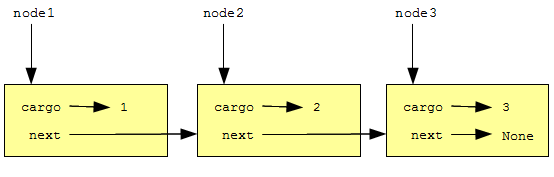

Мы уже видели примеры атрибутов, которые ссылаются на другие объекты. Ссылки на объекты использует и широко известная структура данных связный список.
Связные списки состоят из узлов, каждый из которых содержит ссылку на следующий узел в списке. Кроме того, каждый узел содержит какие-то полезные данные.
Связный список относится к рекурсивным структурам данных, поскольку его определение рекурсивно.
Связный список представляет собой либо
Рекурсивные структуры данных могут обрабатываться рекурсивными методами.
Как обычно при определении нового класса, мы начнем с инициализирующего метода и метода __str__, обеспечив возможность создания и отображения объектов нового класса:
class Node:
def __init__(self, cargo=None, next=None):
self.cargo = cargo
self.next = next
def __str__(self):
return str(self.cargo)
Параметры инициализирующего метода опциональны. По умолчанию и данные, cargo, и ссылка, next, получают значения None.
Строковым представлением узла будет строковое представление данных этого узла. Поскольку функции str можно передать любое значение, в нашем узле можно хранить любое значение.
Для тестирования создадим объект Node и выведем его на печать:
>>> node = Node("test")
>>> print node
test
Чтобы было интереснее, нам нужен список с более чем одним узлом:
>>> node1 = Node(1)
>>> node2 = Node(2)
>>> node3 = Node(3)
Этот код создает три узла, но у нас нет списка, так как ни один узел не связан с другим. Посмотрите на рисунок:
Чтобы связать узлы, нам нужно заставить первый узел ссылаться на второй, а второй — на третий:
>>> node1.next = node2
>>> node2.next = node3
Ссылка в третьем узле имеет значение None, что означает конец списка.
Теперь вы знаете, как создавать узлы и связывать их в списки. Но, возможно, пока не понимаете, зачем это нужно.
Списки полезны, поскольку дают возможность собрать многочисленные объекты в единую сущность, иногда называемую коллекцией. В примере выше, первый узел списка может служить ссылкой на весь список.
Чтобы передать связный список в качестве аргумента, достаточно передать ссылку на первый узел. Например, функция print_list принимает один узел в качестве аргумента. Начиная с первого узла списка, она выводит на печать каждый узел, пока не достигнет конца списка:
def print_list(node):
while node:
print node,
node = node.next
print
Вызовем функцию, передав ей ссылку на первый узел:
>>> print_list(node1)
1 2 3
Хотя у print_list есть ссылка на первый узел списка, внутри функции нет переменных, ссылающихся на другие узлы. Функция получает ссылку на следующий узел, используя значение атрибута next каждого узла.
Чтобы пройти весь связный список, обычно используют переменную цикла вроде node, которая последовательно получает значения, ссылающиеся на узлы списка.
Многие операции над списком естественно реализовать с помощью рекурсивных методов. Вот рекурсивный алгоритм для вывода на печать списка в обратном порядке:
Разумеется, шаг 2, рекурсивный вызов, предполагает, что у нас имеется способ распечатать список в обратном порядке. Но если мы примем, что рекурсивный вызов работает – нужно в это поверить – то мы можем убедиться в том, что алгоритм работает.
Все, что нам нужно, это простейший случай списка (базовый случай) и доказательство того, что, какой бы список мы ни взяли, наш алгоритм в конце концов приведет нас к этому базовому случаю. Имея рекурсивное определение списка, приведенное выше, в качестве базового случая возьмем пустой список, представленный значением None:
def print_backward(list):
if list == None: return
head = list
tail = list.next
print_backward(tail)
print head,
Первая строка обрабатывает базовый случай. Две следующие строки кода разделяют список на head (англ.: голова) и tail (англ.: хвост). Две последние строки кода выводят список на печать. Запятая в конце последней строки удерживает Python от перевода строки после печати каждого узла.
Вызовем функцию так же, как вызывали print_list:
>>> print_backward(node1)
3 2 1
В результате на печать выведен список в обратном порядке.
Возможно, вы недоумеваете, почему print_list и print_backward являются функциями, а не методами класса Node. Причина в том, что мы используем None для представления пустого списка, а вызвать метод для None нельзя. Это ограничение не позволяет написать чистый объектно-ориентированный код для манипулирования списком.
Но можем ли мы доказать, что print_backward всегда завершится? Другими словами, всегда ли алгоритм приведет нас к базовому случаю? На самом деле, ответ отрицательный. Некоторые списки сломают наш метод.
Нет ничего, что помешало бы некоторому узлу ссылаться на узел, который идет в списке раньше этого узла, или ссылаться на самого себя. Например, этот рисунок показывает список с двумя узлами, один из которых ссылается на себя!
Если вызвать print_list с этим списком, функция зациклится. Если вызвать print_backward, возникнет бесконечная рекурсия. Таким образом, работа с бесконечными списками сопряжена с определенными сложностями.
Тем не менее, иногда бесконечные списки полезны. Например, можно представить число как список цифр, и воспользоваться бесконечным списком для представления дробного периода этого числа.
И все же тот факт, что мы не можем доказать, что print_list и print_backward завершатся, представляет проблему. Лучшее, что мы можем сделать, это выдвинуть гипотезу: Если список не содержит циклов, то эти методы завершатся. Такого рода утверждения называются предусловием. Предусловие налагает ограничение на параметры и описывает поведение функции в случае, когда это ограничение выполняется. Вскоре мы встретимся с другими примерами предусловий.
Следующий фрагмент print_backward может вызвать удивление:
head = list
tail = list.next
После выполнения первого предложения присваивания head и list имеют один и тот же тип и одно и то же значение. В таком случае, зачем мы создаем новую переменную?
Причина в том, что эти две переменные играют разные роли. Мы думаем о head как о ссылке на один узел, а о list – как о ссылке на первый узел списка. Эти роли не являются частью программы; они существуют в уме программиста.
В общем случае, глядя на код программы, мы не можем сказать, какую роль играет та или иная переменная. Эта неоднозначность может быть полезной, но также может затруднить чтение программы. Часто, чтобы подчеркнуть роль, которую играет переменная, мы используем переменные с “говорящими” именами, например, node и list, а иногда создаем дополнительные переменные с этой целью.
Можно переписать print_backward без переменных head и tail, что сделает функцию более компактной, но менее ясной:
def print_backward(list) :
if list == None : return
print_backward(list.next)
print list,
Глядя на два вызова функции, нужно помнить, что print_backward рассматривает свой аргумент как коллекцию, а print – как единичный объект.
Если же взять ссылку на узел связного списка вне контекста, то ее семантика неоднозначна. Ссылка на узел связного списка может рассматриваться как ссылка на один узел или как ссылка на список.
Можно изменить список двумя способами. Очевидно, что мы можем изменить данные одного из узлов. Но более интересны операции по добавлению, удалению и перестановке узлов.
В качестве примера давайте напишем функцию, которая удаляет второй узел из списка и возвращает ссылку на удаленный узел:
def remove_second(list):
if list == None: return
first = list
second = list.next
# make the first node refer to the third
first.next = second.next
# separate the second node from the rest of the list
second.next = None
return second
Здесь мы вновь используем временные переменные для того, чтобы сделать код яснее. Воспользуемся этой функцией:
>>> print_list(node1)
1 2 3
>>> removed = remove_second(node1)
>>> print_list(removed)
2
>>> print_list(node1)
1 3
Следующий рисунок иллюстрирует результат работы функции remove_second:
А что случится, если вызвать эту функцию со списком из одного элемента? С пустым списком? Существует ли предусловие для этой функции? Если да, то добавьте в функцию проверку предусловия и обработку его нарушения.
Если нам понадобится вывести связный список в обратном порядке, заключенный в квадратные скобки, то, как вариант, мы можем воспользоваться функцией print_backward чтобы вывести 3 2 1, и отдельно вывести открывающую и закрывающую скобки. Назовем новую функцию print_backward_nicely:
def print_backward_nicely(list) :
print "[",
print_backward(list)
print "]",
В любом месте программы можно вызвать функцию print_backward_nicely, а она, в свою очередь, вызовет print_backward. Здесь print_backward_nicely работает как обертка, используя функцию print_backward в качестве помощника.
У нашей реализации связных списков есть одна проблема, неочевидная на первый взгляд. Поменяв местами причину и следствие, предложим вначале альтернативную реализацию, а затем рассмотрим, какую проблему она решает.
Создадим новый класс LinkedList. Его атрибутами будут целое число, представляющее длину списка, и ссылка на первый узел списка. С помощью объектов LinkedList удобно манипулировать списками объектов Node:
class LinkedList:
def __init__(self):
self.length = 0
self.head = None
Класс LinkedList оказывается удобным местом для помещения в него таких функций, как print_backward_nicely, и превращения их в методы этого класса:
class LinkedList:
...
def print_backward(self):
print "[",
if self.head != None:
self.head.print_backward()
print "]",
class Node:
...
def print_backward(self):
if self.next != None:
tail = self.next
tail.print_backward()
print self.cargo,
Мы переименовали print_backward_nicely, и теперь у нас два метода с именами print_backward: один в классе Node (помощник), и один в классе LinkedList (обертка). Когда метод-обертка вызывает self.head.print_backward, он вызывает метод-помощник, поскольку self.head ссылается на объект Node.
Еще один плюс класса LinkedList состоит в том, что он облегчает добавление и удаление первого элемента списка. Например, следующий метод add_first класса LinkedList принимает в качестве аргумента данные для узла и помещает новый узел с этими данными в начало списка:
class LinkedList:
...
def add_first(self, cargo):
node = Node(cargo)
node.next = self.head
self.head = node
self.length += 1
Создадим связный список, добавим в него три узла и выведем его на печать в обратном порядке:
>>> linkedlist = LinkedList()
>>> linkedlist.add_first(1)
>>> linkedlist.add_first(2)
>>> linkedlist.add_first(3)
>>> linkedlist.print_backward()
[ 1 2 3 ]
Поскольку каждый раз новый узел добавляется в начало списка, то последовательно добавленные нами узлы со значениями 1, 2, 3 расположились в обратном порядке, и метод print_backward вывел узлы в порядке их добавления.
В качестве упражнений вам будет предложено добавить другие полезные методы в класс LinkedList и поэкспериментировать с ними.
Некоторые списки построены правильно; другие нет. Например, если список содержит цикл, он сломает многие из наших методов. Поэтому мы можем потребовать, чтобы списки не содержали циклов. Другое разумное требование состоит в том, чтобы значение length в объекте LinkedList всегда равнялось реальному числу узлов в списке.
Требования, подобные этим, называются инвариантами, поскольку, в идеале, они должны выполняться для каждого объекта в любой момент времени. Указание инвариантов для объектов — полезный прием программирования. Он облегчает доказательство корректности кода, проверку целостности структур данных, и способствует обнаружению ошибок.
Заметим, что в отдельные моменты времени инварианты все же не выполняются. Например, в середине метода addFirst, после того, как мы добавили узел, но перед тем, как мы увеличили length, инвариант оказывается нарушенным. Такого рода нарушение приемлемо; действительно, часто невозможно изменить объект, не нарушая инвариант хотя бы ненадолго. Достаточно потребовать, чтобы метод, который нарушает инвариант, восстанавливал его.
Если имеется значительный участок кода, в котором инвариант нарушен, важно отразить это в комментариях. Чтобы операции, зависящие от инварианта, не выполнялись, пока инвариант не восстановлен.